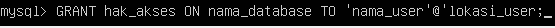
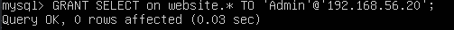
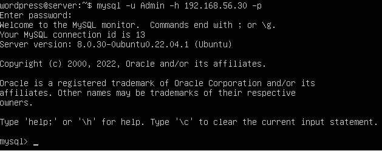
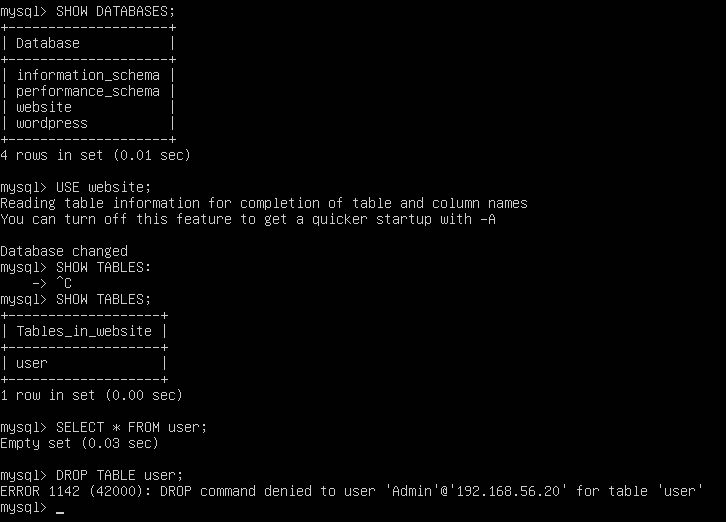
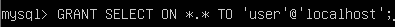
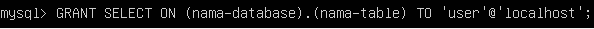
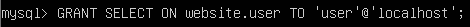
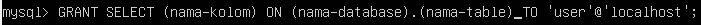

Grant Privileges/Acces Control Languages
Memberikan hak akses / privileges user Mysql
Grant adalah query untuk memberikan hak akses kepada user, berikut
format dari query Grant :

hak_akses adalah privileges yang akan berikan kepada user tersebut. Hak akses disini berisi query yang diperbolehkan,
seperti: SELECT, INSERT, UPDATE, DELETE, atau query lainnya. Jika kita ingin memberikan hak penuh untuk semua query dasar tersebut, hak_akses ini bisa diisi dengan ALL.
nama_database adalah nama database yang ingin diberikan hak akses. Jika kita mengizinkan user tersebut dapat mengakses semua database yang ada, nama_database bisa ditulis dengan tanda bintang (*).
nama_tabel adalah nama tabel yang ingin diberikan hak akses. Jika kita mengizinkan user dapat menggunakan semua tabel, nama_tabel bisa ditulis dengan tanda bintang (*).
nama_user adalah nama dari user yang akan diberikan hak akses.
lokasi_user adalah alamat IP dari user yang ingin diberikan hak akses.
Sebagai contoh penggunaan query Grant, misalkan kita ingin memberikan privileges kepada user Admin untuk dapat melihat (melakukan query SELECT)
pada database website, maka berikut query yang kita gunakan:

Perhatikan cara penulisan query GRANT tersebut, setelah keyword GRANT, diikuti dengan kata SELECT. SELECT disini adalah hak akses yang ingin di berikan kepada user,
saya memberikan hak SELECT karena user Admin saat ini hanya dapat melakukan perintah SELECT.
Untuk mencoba user Admin keluar dari user root dan masuk dengan user admin.


Dari contoh diatas dapat dilihat pada saat user Admin melakukan query SELECT user dapat
menjalankan query tersebut. Namun ketika user Admin melakukan query DROP TABLE terjadi error dimana
query tersebut ditolak karena user Admin tidak memiliki hak terhadap query DROP.
Jenis-jenis Hak Akses (Privileges) Dalam MySQL
Jenis Hak Akses Berdasarkan Cakupan Akses Level
1. Hak Akses Global (*.*)
Hak akses ini berarti user dapat memiliki hak akses untuk seluruh database yang terdapat di dalam MySQL. Contoh penulisan query GRANT untuk level ini adalah:  Perhatikan cara penulisan nama_database.nama_tabel, dimana kita menulisnya dengan *.*, sehingga user tersebut dapat mengakses seluruh tabel pada seluruh database.2. Hak Akses Level Database (nama_database.*)
Hak akses ini berarti user memiliki hak akses penuh untuk sebuah database. Contoh penulisan query GRANT untuk level database ini adalah: Untuk penulisan nama_database.nama_tabel, kita membatasi nama database, namun memberikan hak akses untuk seluruh tabel, penulisannya adalah nama_database.*3. Hak Akses Level Tabel (nama_database.nama_tabel)
Hak akses ini berarti user memiliki hak akses untuk sebuah tabel yang berada pada sebuah database. Contoh penulisan query GRANT untuk level ini adalah:   Hak akses yang dimiliki user hanya terbatas pada level sebuah tabel saja.4. Hak Akses Level Kolom (nama_kolom)
Hak akses ini adalah hak akses paling kecil yang dapat diberikan kepada sebuah user. Dengan hak akses level kolom, user hanya memiliki hak akses untuk beberapa kolom pada sebuah tabel. Contoh penulisan query GRANT untuk level kolom ini adalah: 